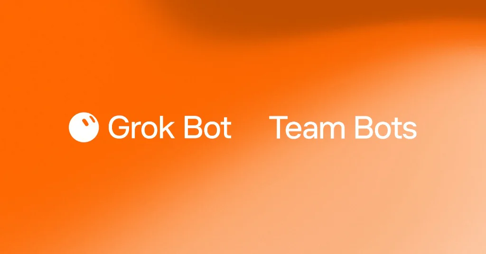
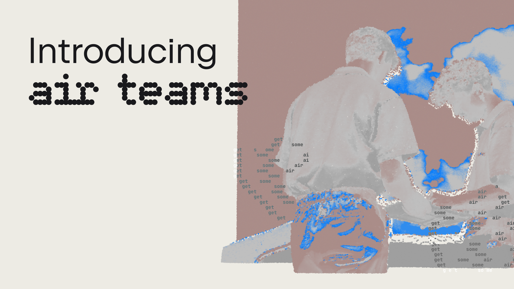
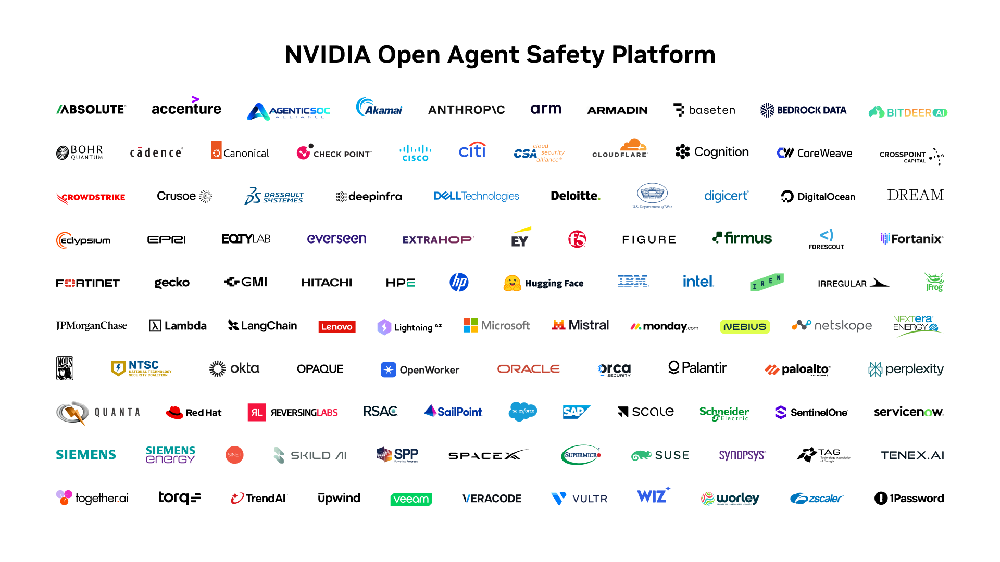
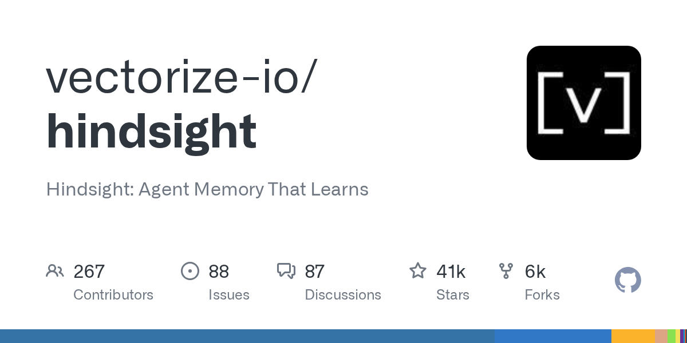
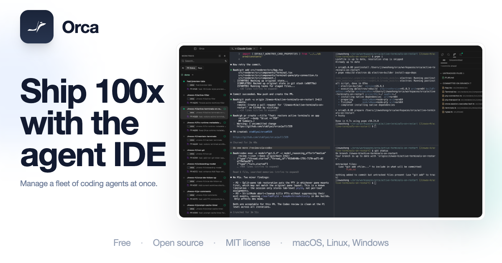

AI Intelligence Daily · 2026-09-29
专栏一｜新闻
1. Claude Sonnet 5.5 全系上架 + Claude Code 2.1.284 默认
事实
Anthropic 发布 Claude Sonnet 5.5。相对 Sonnet 5：官方称 30%+ faster、多数工作最高约 30% 更便宜（标价仍 $2/$10 per MTok + $0.20 cache reads，靠更少 token）；1M context。newsroom 日钉 Sep 28, 2026；X @AnthropicAI 18:04:06Z。
并入： Claude Code 2.1.283→2.1.284（npm 17:11Z / GH 18:02Z）——默认 claude-sonnet-5-5；/mcp reconnect all；interactive auto mode 默认；Ultracode 独立开关等。
同日生态： Copilot GA changelog 18:03Z · AWS Bedrock 18:57Z · Cursor X 20:14Z（changelog 仍 Sep23）· GitLab Duo X 21:12Z · OpenRouter 19:10Z。社区 HN ≈535p / ≈366c。
判断
默认 Sonnet 切换是 Harness 级事件——改写 Code/Copilot 主路径的成本与时延基线。对 AI Coding / Agent Loop 选型与预算门控有直接冲击。

产品页 · Claude Code 2.1.284 · Copilot · Bedrock · HN
2. xAI Team Bots —— 团队共享 Grok Bot
事实
datePublished=2026-09-28T00:00:00Z。共享 Grok Bot：Knowledge（files/instructions/skills）+ Plugins（Salesforce/Notion/GitHub 等）+ Custom Actions + Memory；Slack；会话隐私隔离。内部用例含 EPD 协调与 Cursor Cloud Agents（自称数周内百级 PR/日）。非 Desktop 安装包新版本。
判断
团队级 Work Agent 切片——共享 memory·skills·connectors + 可调度 Cloud Agents；与智能体互联、委托与 Work 引擎高度同向。全日窗起点发布却未被当日 flash 推送，属漏报补救。

3. JetBrains Air Teams —— 商业客户可用
事实
商业客户已可用；Automations（约 10 模板）/ 共享云环境 / Cloud tasks / Projects / 服务账号与额度。RSS pubDate=2026-09-28T13:15:11Z；X @jetbrains 15:16:09Z。本轮复验：博文仍在；无更新版 Desktop client。
判断
IDE 厂把「个人 Air」扩到团队：共享云环境 + 可调度 Cloud tasks + 项目额度——Work Agent 组织层落地。

4. NVIDIA Open Agent Safety Platform / OpenShell + Sentry
事实
OpenShell broadly available + Sentry / BlueField-4。Newsroom 2026-09-28T09:00:00Z；GH OpenShell 顶仍 v0.1.2@03:58Z（本轮无新 tag）。产品页可达。
判断
Agent 安全 Runtime 推进到平台叙事；OpenShell 仍早期（v0.1.2），但硬件侧绑定值得对照沙箱与出站策略。勿因星标续爬重抬 NEW。

5. MiniMax Code Desktop v3.0.74 —— M3.1-Flash 登陆 Desktop
事实
Desktop v3.0.74 — 2026-09-28：M3.1-Flash-Preview「debuts in MiniMax Code」；限时 Sep 28–Oct 7 双倍免费点数 + Token Plan quota reset。CDN 3.0.74 三端 200；3.0.75 仍 404。CLI npm/GH 仍 0.5.8（docs 无功能条 → 不升格第二强 A）。相对 09-28 早报「非 Desktop」——本条为 CORRECTION。
判断
国内 P0 Coding Agent Desktop 客户端发版 + 新模型档进 Desktop；配额实验窗口至 10/7。
专栏二｜话题热议
1. 「Coding is not solved」——AI Coding 舆论 UPDATE
事实
意见文主张「coding 未被 AI 解决」。HN 400p / ≈423c（相对 flash ≈169p 续涨）。非厂商 shipping。与 overnight 更强默认 Sonnet 5.5 并置。
判断
预期管理 / Harness 价值叙事旁证——更强默认模型并不自动消解工程与组织债。勿升格产品主条。

脚注 · 续热不升格
Authors Guild ≈626p · no-rogue ≈389p · OpenAI rogue TC ≈100p · Investigate AI Labs ≈227p · 「problem is not AI code」≈341p —— 均 勿升格主条。
专栏三｜开源雷达
1. paperclipai/paperclip ★≈92.8k（≈+2.9k）· Trending #2
续暴涨；release 仍 v2026.916.1，无新 tag。建议扫 governance / 多租户审计；勿因星标升 S。

2. vectorize-io/hindsight ★≈40.9k（≈+3.7k）· Trending #3
今日 stars today 增量仍高于 paperclip；仍 v0.10.1。建议 Memory PoC。

3. stablyai/orca ★≈80.7k · v1.4.216@19:46Z
相对 215→216 仅 status bar 窄屏 UI fix——勿升格功能 NEW。保持 ADE watchlist。

4. NVIDIA/OpenShell ★≈9.4k · 仍 v0.1.2
星标续爬 + MCP protocol profiles inspect commit；产品 NEW 已在新闻条 absorb，此处仅旁证。
重点事件新进展
- OpenAI misalignment：Authors Guild/no-rogue/TC 续热；官方一手页无新 shipping 段。
- MiniMax：Desktop 3.0.74 + M3.1（相对早报 CORRECTION）；CLI 0.5.8 pin；promo→10/7。
- DeepSeek：pins 未变；无官网 Desktop CTA。
- Qoder：Flash→09-30；SOTA 仍无揭晓。
- 开源：paperclip/hindsight 续暴涨；orca v1.4.216 窄 UI。
- Claude Code：pin 2.1.284（并入 Sonnet 主条）。
- 附录：overnight 除 MiniMax Desktop（日间已推）与 Claude Code CLI 外，一线厂 Desktop 客户端 bump=0；Cursor changelog 仍 Sep23；小艺/Kimi/ZCode/MCP/Muse 未变；Copilot Default Enablement→Oct 22。
今天正在形成的趋势
- 默认模型切换成为 Harness 级事件（Sonnet 5.5→Code/Copilot 同日）。
- 团队 Work Agent 产品切片同日三响（Team Bots / Air Teams / OAS runtime）。
- 「coding 未解决」舆论与更强默认 Sonnet 并置。
- 编排/Memory 开源仓吸血未退（paperclip/hindsight）。
对智能体互联网
- Team Bots 的共享 Knowledge + 会话隔离——多租户 Bot 身份/记忆边界样板。
- OAS/OpenShell 安全 Runtime——出站、沙箱与硬件侧对照自有 Trust 栈。
- 本窗无新 MCP/A2A 正式版本（MCP 仍 2026-07-28）。
对 Work / Agent 引擎
- 默认模型热切换 + MCP 全量重连（Claude Code 2.1.284）。
- 团队层：Air Teams / Team Bots——Projects、服务账号、共享云、Skills/Plugins。
- Desktop 与模型档同日纠偏（MiniMax 3.0.74）——情报需分钉复验。
值得继续跟踪
- Sonnet 5.5 采用/定价 · Claude Code 2.1.284+
- Team Bots GA 深度 · Air Teams · OAS/OpenShell
- MiniMax Desktop 下一钉 · promo→10/7
- Copilot Default Enablement · Oct 22
- Qoder Flash→09-30 · SOTA · DeepSeek CTA
- paperclip / hindsight / orca · Muse / MCP / 小艺·Kimi·ZCode
未来信号
「默认模型切换」可能比「新 Desktop 安装包」更频繁地改写 Agent 舰队的成本与行为基线——预算闸门、评测集与权限默认值都需要可热更新。
价格 / 订阅雷达
Sonnet 5.5：$2/$10 + $0.20 cache（同 Sonnet 5 标价，靠更少 token）。MiniMax promo 9/28–10/7 双倍点数 + Token Plan reset。Qoder Flash 限免仍至 2026-09-30 23:59:59。
信源与方法
P0+P1 国内外官网/changelog/RSS + 官方 X；HN/V2EX/gh/Trending。X credits 约 $2.10→$1.92。配图仅原文真实图。完整 MD 与扫描底稿：reports + /workspace/daily-2026-09-29-*.md。